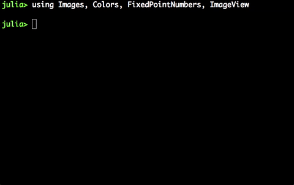
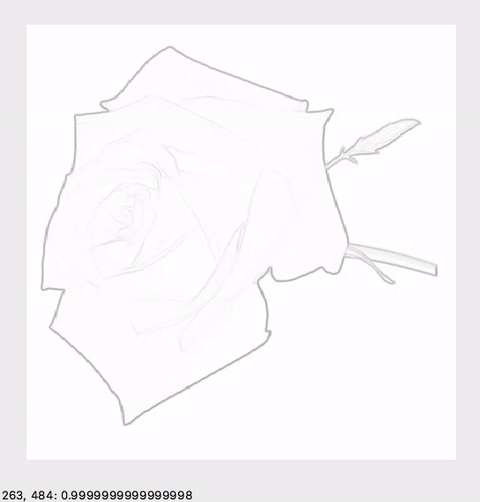

Images¶
The images in this project are very important. Specially because from them will be extracted the graphs that would allow us to run relevant examples of the algorihtm.
The Images package developed by Tim Holy, was extensively used. Let us provide some insights about how this work.
The first step is to load the image. The file should be on the same path you are executing Julia. You use the following command that would load the image as an array of pixels:
julia> using Images, Colors, FixedPointNumbers, ImageView
julia> img=load("rose.png")
Now we can play with and “see” the data:

If you want to see the image you can use the following command:
julia> view(img)
That would open an extra window showing
GrayScale¶
Now we can convert this image to gray scale, so it is easy to handle for calculations.
julia> A=convert(Image{Gray{Ufixed8}}, Img)
julia> view(A)
Gradient¶
Now we can calculate gradient using the function from Images
julia> xx,yy=imgradients(A)
julia> c=(sqrt(xx.^2+yy.^2))
julia> view(c)
Now we need to find a way to reduce the cost of the middle of the images but make larger the cost of the border. To so I ran the following code:
Cost¶
julia> cost=1./(c.+1)
julia> view(cost)
Now if you go and see the cost of the borders they will be smaller thant those outside (they will be around 1). Therefore we will have the way to form the shortest path as the border of the image.

Now we are ready to set up the graph.